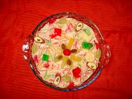

Lab-e-Shireen

Ingredients:
- 3/4 cup vermicelli in the Pakistani style
- Two Jell-O crystal packets
- Split 6 1/2 cups of whole milk
- 1/4 cup custard powder, ideally with a vanilla taste.
- One cup of sugar, grated
- Half a cup of chopped unsalted almonds
- An optional 1/2 to 1 cup of heavy whipping cream
- 2 cups diced your favorite fruit
Instructions:
- Bring a saucepan of water to a boil and cook the vermicelli until it becomes tender.
- Empty, give it a quick rinse in cold water, and reserve.
- As directed on the packaging, prepare the Jell-O crystals.
- Permit it to solidify.
- Cut into small pieces after cooling.
- In a separate dish, whisk together 1/2 cup milk and custard powder.
- Put away.
- Mix sugar and the remaining six cups of milk.
- Place over medium-high heat and bring to a boil.
- Slowly pour in milk mixture and custard powder while stirring.
- Simmer for three to four minutes, or until the custard starts to thicken.
- Add the nuts and cooked vermicelli.
- Take off the heat source and let it cool fully.
- Stir the custard and assess its consistency after it has cooled to room temperature.
- The custard should be thick enough to coat a spoon, but loose enough to be able to be drunk with a spoon.
- To get the right consistency, carefully whisk in 1/2 to 1 cup of heavy whipping cream if the custard is too thick.
- Gently incorporate the prepared Jell-O crystals and fruits.
- Refrigerate until ready to serve!